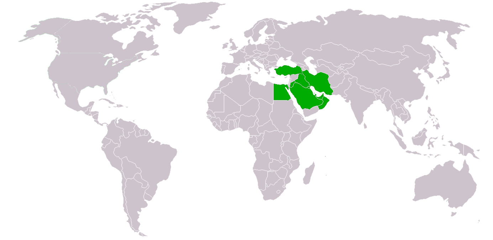

Enriching Image Recognition with Location-Based Information
In order to develop an application that effectively tracks people's nutrition and eating habits, it is crucial to have a robust image recognition system specifically designed for identifying various types of food. Recognizing the significance of location data in improving image classification efficiency, we have embarked on a project to collect a comprehensive dataset consisting of Middle Eastern food images, accompanied by their titles, labels, and geolocation information. Our data collection process involves crawling online food ordering platforms that cater to the Middle Eastern region. Specifically, we utilize Snappfood for Iran, Yemeksepti for Turkey, and Talabat for the other Arabic countries listed above. These platforms offer a wide range of food options and provide valuable insights into the diverse culinary traditions of the Middle East.
We crawled 3 online food ordering websites to collect food images, recipes, and the geolocation of corresponding restaurants:
- Extracting ingredients and recipes from the text data.
- Turn all of crawled texts in a uniform format.
- Utilizing trained models to detect and remove duplicated images
- Assigning a 3-level hierarchical label to each image, providing detailed categorization.
- Enriching each image entry with geolocation, 3-level label, and corresponding recipe information.
- This comprehensive dataset serves as a valuable resource for training image classification models specifically tailored for food-related tasks.